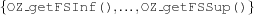

1.7 The class OZ_FSetValue
1.7.1 Miscellaneous
OZ_FSetState[enumerable type]enum OZ_FSetState {fs_empty, fs_full};Used when constructing a Finite Set or with the operator
==.value
meaning
fs_emptythe empty set
fs_fullthe set 
1.7.2 Constructor Member Functions
OZ_FSetValue[default constructor]OZ_FSetValue(void);This constructor creates an uninitialised Finite Set Value.
OZ_FSetValue[overloaded constructor]OZ_FSetValue(const OZ_FSetConstraint &fsc);fscmust have a determined value (i. e.fsc.isValue()must be true). A Finite Set is constructed from this value.OZ_FSetValue[overloaded constructor]OZ_FSetValue(const OZ_Term t);Constructor using a level4 list description like for Finite Domains (see Section 1.2.4) to create a Finite Set Value.
OZ_FSetValue[overloaded constructor]OZ_FSetValue(const OZ_FSetState state);Creates a Finite Set Value according to
state(fs_emptyorfs_full).OZ_FSetValue[overloaded constructor]OZ_FSetValue(int min_elem, int max_elem);Creates a Finite Set Value
 .
.
1.7.3 Reflection Member Functions
getMinElem[constant member function]int getMinElem(void) const;Returns the smallest element of the set.
getMaxElem[constant member function]int getMaxElem(void) const;Returns the largest element of the set.
getNextLargerElem[constant member function]int getNextLargerElem(int i) const;Returns the next larger Element after i in the set, or -1 if there is none.
getNextSmallerElem[constant member function]int getNextSmallerElem(int i) const;Returns the next smaller Element before i in the set, or -1 if there is none.
getKnownInList[constant member function]OZ_Term getKnownInList(void) const;Returns a level4-List (see Section 1.2.4) containing the elements in the set.
getKnownNotInList[constant member function]OZ_Term getKnownNotInList(void) const;Returns a level4-List (see Section 1.2.4) containing the elements in the complementary set.
1.7.4 Operator Member Functions
operator ==[operator constant member function]OZ_Boolean operator == (const OZ_FSetValue &fs) const;Tests equality on sets.
operator <=[operator constant member function]OZ_Boolean operator <= (const OZ_FSetValue &fs) const;Return
OZ_Trueif*thisis a subset offs.operator &[operator constant member function]OZ_FSetValue operator & (const OZ_FSetValue &fs) const;Returns the intersection of
*thiswithfs.operator |[operator constant member function]OZ_FSetValue operator | (const OZ_FSetValue &fs) const;Returns the union of
*thiswithfs.operator -[operator constant member function]OZ_FSetValue operator - (const OZ_FSetValue &fs) const;Returns the elements in
*thisnot infs.operator &=[operator member function]OZ_FSetValue operator &= (const OZ_FSetValue &fs);*thisis assigned its intersection withfs.operator |=[operator member function]OZ_FSetValue operator |= (const OZ_FSetValue &);*thisis assigned its union withfs.operator &=[operator member function]OZ_FSetValue operator &= (const int i);If
iis in*this, this function returns ; otherwise the empty set.
; otherwise the empty set. operator +=[operator member function]OZ_FSetValue operator += (const int i);iis put into*this.operator -=[operator member function]OZ_FSetValue operator-=(const int);iis removed from*this, if in.operator -[operator constant member function]OZ_FSetValue operator-(void) const;Returns the complement of
*this.
1.7.5 Auxiliary Member Functions
init[member function]void init(const OZ_FSetState state);Initializes a Finite Set Value according to
state(fs_emptyorfs_full).isIn[constant member function]OZ_Boolean isIn(int i) const;Returns
OZ_Trueifiis in*this.isNotIn[constant member function]OZ_Boolean isNotIn(int) const;Returns
OZ_Trueifiis not in*this.getCard[constant member function]int getCard(void) const;Returns the cardinality of
*this.getKnownNotIn[constant member function]int getKnownNotIn(void) const;Returns the cardinality of
*this' complement.copyExtension[member function]void copyExtension(void);This member function replaces the current extension of the set value representation by a copy of it.
disposeExtension[member function]void disposeExtension(void);This member function frees the heap memory occupied by the extension of the set value.
toString[constant member function]char * toString(void) const;Returns a textual representation of the finite set value pointing to a static array of
chars.